This appendix provides a worked example of creating a TouchDevelop script using an editor which runs inside your browser. It cannot cover all the editor’s features. Some experimentation is suggested for gaining familiarity with the editor. The script to be entered is shown in Figure A-1. It is published under the name rotor with code name /gtbd.
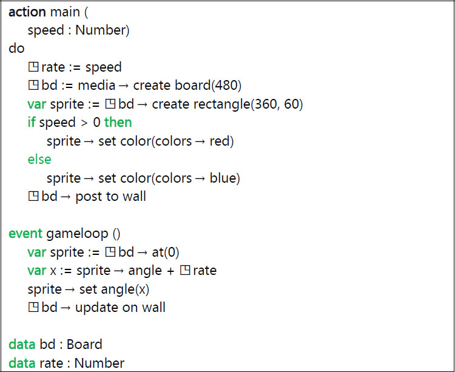
Figure A-1
The rotor program /gtbd
A.1 The starting point
Once you have signed into the TouchDevelop website, your current webpage is a page with the URL
https://www.touchdevelop.com/app/
#. This webpage is known as the hub.
In the top left of the hub, there should be a collection of tiles under the heading my scripts. If you have previously created or downloaded some scripts, there will be tiles for the more recent ones. If you wish to edit one of these scripts, just tap its tile and then tap the large orange tile labeled edit. If you don’t see a tile for your previously created or downloaded script, tap the tile labeled See More and the browser will display a webpage which contains tiles for many more scripts, plus a button at the end of the list which reads load more. Tapping that button performs as advertised, extending the list with more tiles plus a new load more button at the end.
For our example, we are creating a completely new script so we tap the tile labeled Create Script. This causes the browser to display a scrollable list of script templates. The top portion of the list is shown in Figure A-2. We should look through the list to see if there is a template for the kind of script we wish to create. For our example, we tap the template named blank because none of the other templates seems to be appropriate.
The browser now displays a textbox into which we should enter a name for the new script. A default name reading something like ‘my script 5’ has been provided in the textbox, but we will change it to read ‘rotor’. Having entered that text, we tap the button labeled create.
The browser now displays the webpage for the TouchDevelop script editor. As seen in the screenshot shown in Figure A-3, the webpage is divided into three columns.
- A narrow left column contains buttons labeled my scripts, run and undo. That undo button is very useful because it undoes the effect of any editing action performed by mistake.
- A wider second column has a tile for the new script itself, tapping that tile brings up a script properties page where the name of the script can be changed, along with many other properties which are not needed until the script is finished.
There are several headings below the initial tile, one for each possible section of a script. Underneath heading, there would be a tile for every action, every page, every event … which has been added to the script. At this point, there is only a tile for an action named main.
- The remainder of the browser window is devoted to the third column which is the editing window. When we start, that window holds the code for the main action. A minimal version of the action which does nothing has been provided in the template.
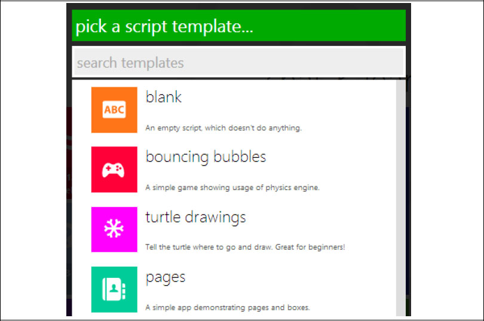
Figure A-2
The first few script templates
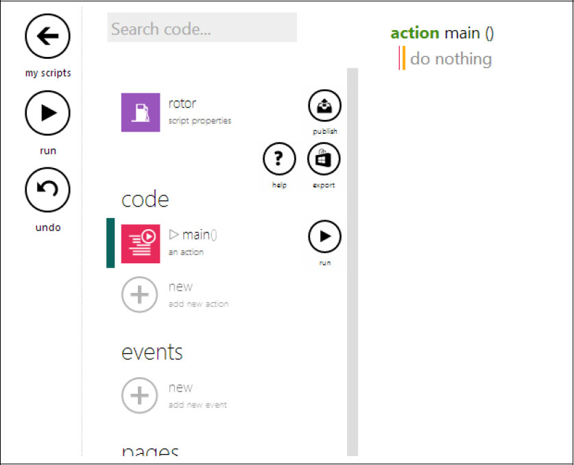
Figure A-3
The editor webpage
A.2 The editing steps
The screen contents change many times as the editing steps detailed below are followed. For space reasons, only a selection of the screenshots can be included in this appendix.
Getting started – providing an input parameter
The script for the main action will modified to have a parameter. Its code will then be as follows.
action
main( speed : Number )
do
// do nothing
1.
If the code for the main action is not displayed, tap on the tile for the main action underneath the code heading in the second column of the main editor webpage (as in Figure A-3).
2.
Our script needs an input parameter for its main action, so tap anywhere on the first line of the code for main – on the line which reads “action
main()”. That changes the second column of the webpage.
3.
In the second column, there is a large gray plus symbol and the words “add input parameter”. Tap that plus symbol. The code for main shown in the third hand column instantly changes to show an input parameter named p with type Number.
4.
We do not want to keep the name p for that parameter, so tap anywhere in the line of code where p: Number appears. The webpage changes so that the second column displays details of parameter p and the third column indicates which part of the script we are focused on.
5.
In the second column, the parameter’s name p appears in a textbox whose contents can be edited. Select that name p using the mouse or a finger on a touchscreen, and enter the replacement name: speed. (The editor guessed the correct type for the parameter, so it does not need to be changed. If we had wanted a different type, tapping the tile for the Number type would allow us to select an alternative.) Tap anywhere in the third column, and the code is redisplayed showing the new parameter name.
Adding the first statement to the action
The first statement to be inserted is ◳rate := speed
1.
Tap anywhere in the comment which reads do nothing. This causes the comment to disappear and be replaced with a vertical bar which indicates the insertion point for subsequent editing actions. More importantly, two keypads appear side-by-side at the bottom of the browser window. The two keypads are shown in Figure A-4 and Figure A-5. The left keypad is used for entering or editing constants (numbers, strings and Booleans). The right keypad is used for entering statements and expressions.
2.
The top row of the right-hand keypad shows different kinds of statements. We wish to insert an assignment to a new variable, so tap on the tile labeled var. The code changes to show an assignment to a new variable named x where the right-hand side is empty. The red bar is on the right side, indicating where the editor will insert new items. See Figure A-6. The right keypad at the bottom of the window also changed; it now shows only items which can appear at the current insertion point in the code.
3.
One of the tiles in the keypad is labeled speed. Tap that tile. The identifier speed gets inserted into right side of the assignment.
4.
The right side is complete, but the left side is not the variable we wanted. Select the left side of the assignment. This causes the insertion bar to appear just to the right of the name x. In addition, the right keypad at the bottom of the screen has changed again. There is a tile labeled rename. Tap it.
5.
Enter the desired name rate on the keyboard. And then tap anywhere below on the screen. The code for the action is redisplayed showing the statement as var
rate := speed.
6.
We did not want rate to be a local variable, so tap anywhere in that statement and then tap the left hand side. The insertion bar appears alongside the name rate and the right keypad re-appears.
7.
Tap the tile labeled promote to ▯data. This causes the code to be redisplayed, with the assignment now reading ◳rate := speed. The second column in the window has also changed; a global variable named rate has appeared in the data section of the script.
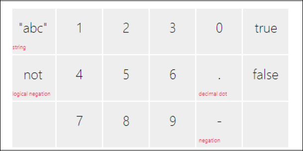
Figure A-4
The left keypad
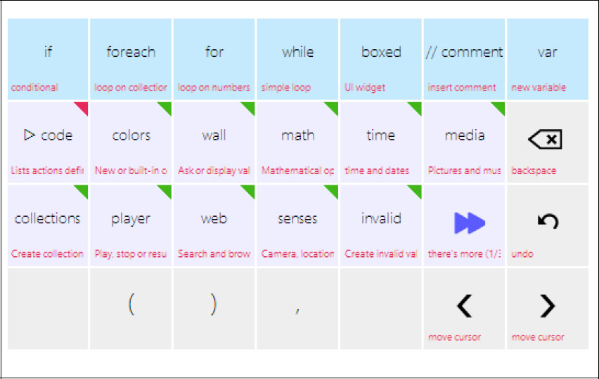
Figure A-5
The right keypad
Adding the second and third statements
The two statements to be inserted are as follows.
◳bd := media→ create board(480)
var
sprite := ◳bd → create rectangle(360,60)
1.
Tap on the right side of the previously inserted assignment statement; this causes the insertion marker to appear after the identifier speed. Now hit the enter (or return) key. An empty line with the insertion marker at the left end appears.
2.
Tap the var tile in the keypad to begin a new assignment statement to a new variable,
3.
Tap the tile labeled media. There is one tile for each service or resource in the API. If you do not see the service you need, you can tap the special tile labeled “there’s more”. (It can be seen in Figure A-5.)
4.
When the media tile was tapped, the identifier media appeared in the code for the statement and the keypad changed. The tiles in the keypad are now labeled with all the methods provided by the media service. Tap the create board tile.
5.
A call to the create board method with a default parameter of 640 has appeared in the code. The editor insertion point is shown just to the right of the 640 value. Tap the backspace tile in the keypad three times to erase the three character ‘0’ ‘4’ ‘6’ in that order. Now tap the tiles labeled ‘4’ ‘8’ ‘0’ on the left keypad to enter the new number 480.
6.
Change the name of the variable on the left of the assignment to bd and promote it to be a global variable, by following the same steps as given above for the variable rate.
7.
Insert a new empty line below the last statement. The easy way to do that is to tap the add below button, as seen in Figure A-6. It is the plus symbol beneath the current statement. (Alternatively, move the insertion point to the right end of the statement and hit the enter key on the keyboard.)
8.
Following the same techniques as before, insert the statement
var
sprite := ◳bd → create rectangle(360,60)
(To insert the global variable ◳bd into the right side, look for the key labeled ◳data on the keypad; after tapping that, there will be a key labeled bd, one for each global variable defined so far, and this should be tapped.)
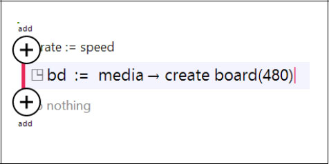
Figure A-6
Add above and add below buttons
Inserting the if statement
The statements to be inserted are the following:
if
speed > 10
then
sprite → set color(colors → red)
else
sprite → set color(colors → blue)
◳bd → post to wall
1.
Tap in the last statement entered and tap the add below button. Then tap the tile in the top row of the right keypad which is labeled if. An empty if-then-else statement is inserted into the script.
2.
With the current insertion point at the place where the conditional expression should go, tap the key labeled speed in the right keypad. then tap the key labeled > and finally tap the key labeled 0 in the left keypad.
3.
Tap on the do nothing comment in the then clause of the if statement and insert the initial version of the next statement by tapping keys labeled sprite and set color.
4.
The new statement has colors→random as the argument of set color. Tap on the name random to select it. Then tap the tile labeled backspace in the right keypad to delete the →random part. Finally tap the tile labeled red in the right keypad.
5.
Select the else keyword as the insertion point and similarly insert the statement sprite → set color(colors → blue).
6.
Tap on the keyword if so that the whole if statement is enclosed within add above and add below buttons. Tap add below and the insertion point becomes a new line below the if statement. Insert the final line ◳bd→post to wall using steps similar to those previously described.
Defining the Gameloop Event
The final steps provide the code for the gameloop event. The code will read as follows.
event gameloop( )
var sprite := ◳bd → at(0)
var x := sprite → angle + ◳rate
sprite → set angle(x)
◳bd → update on wall
1.
If necessary, tap anywhere in the window away from the recently entered code, so that the second column is displaying the different components of the script. There should be a heading which reads events. Tap the plus symbol below that heading.
2.
A scrollable list of different kinds of events should be showing on the screen. Tap on the item labeled gameloop(). This new event will appear as one of the script’s components in the second column, and the code for a gameloop event will appear in the third column.
3.
Using the same kinds of steps as previously covered, the four statements to handle the event can be inserted.
Trying out the script
At this point, we should test the script.
1.
The left column on the screen has a button labeled run. Tap this button to start the script running. Since the script requires an input parameter, a dialog box appears on the screen. Enter a number such as 10 into the text entry field and tap the OK button.
2.
The display from the running script is like that in Figure A-7. To suspend the script, tap the stop button in the top right corner of the browser’s window. To resume running the script, tap the button in the same spot as before (it has changed to be a run button).
3.
To exit from the script’s execution, tap the button in the top left corner which is labeled with a left arrow. That will return to the editor.
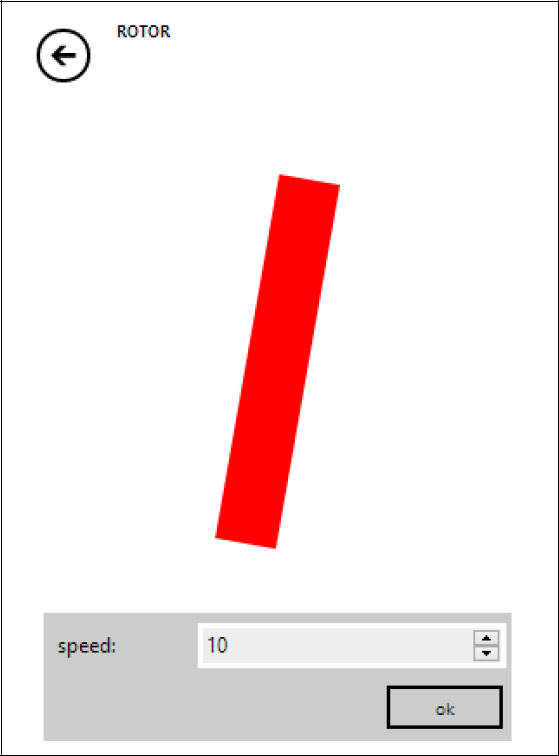
Figure A-7
The running script
A.3 Additional steps
Revising the script
If the script does not behave as expected or needs improvement, it is easy to go back and edit the code. On the screen where the script components are listed, just tap the name of the action or the name of the event to display its code in the third column of the editor’s window.
Publishing the script
If the code is something that is worth sharing with others, or simply to save it to the cloud, the script can be published. Just tap the upward pointing arrow, labeled publish underneath, which appears to the right of the tile for the script’s properties in the second column.
After tapping the publish button, the screen should display a message with buttons underneath. One button is labeled publish and the other publish as hidden. The two buttons provide a choice of making the script visible or making it hidden.
If it is marked as visible, then anyone searching the TouchDevelop website for an example of a particular language feature or script feature may be directed to this script. It can also appear in lists of new scripts, or featured scripts. If it is marked as hidden, then it will not show up in such searches (but anyone knowing the codename for the script can still access it).
A.4 More advanced editing features
A.4.1 Refactoring code into a new action
Removing a sequence of statements and making a new action from them is known as refactoring. The TouchDevelop editor makes this process easy. To demonstrate, the steps for refactoring a few statements from the main action in the rotor script are given below.
1.
Select the first line in the sequence. The statement which assigns to the variable sprite in the main action is shown as selected in Figure A-8
2.
Tap the button labeled mark which appears to the right of the window. The code listing display changes to be like that seen in Figure A-9. The extent of the lines of code to be refactored is shown by the two thick red lines.
3.
Now drag the bottom red line downwards until it is immediately below the last statement to be transferred to the refactored action. The screen should be showing a selected group of lines similar to that shown in Figure A-10.
4.
In the second column displayed in the browser window, there are several headings and several buttons. Underneath the heading which reads “extract selection into action”, enter a suitable name for the new action into the textbox, replacing the default name of do stuff. Figure A-11 shows that textbox after entering the new name update sprite.
5.
Now tap that extract button and the new action is created. The refactored action is provided with whichever parameters are needed to allow it to work correctly. A statement is inserted into the main action, replacing the refactored code.
It should be observed that the marked group of statements could have been selected by first marking the last line and then moving the top horizontal red line upwards. Or any line in the group can be marked and both end point lines adjusted.
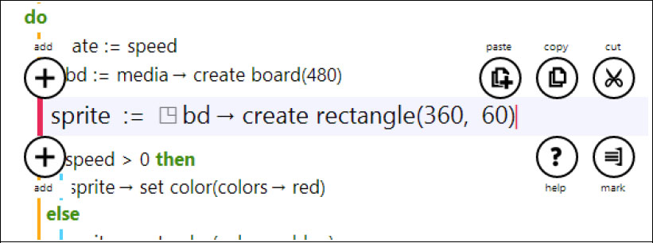
Figure A-8
Selecting the first line
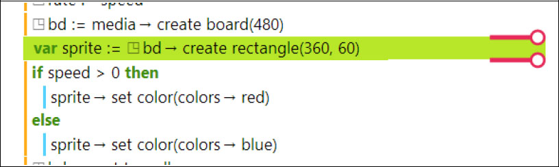
Figure A-9
Marking the first line to extract
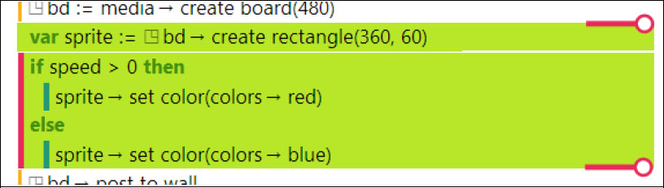
Figure A-10
Marking the last line to extract
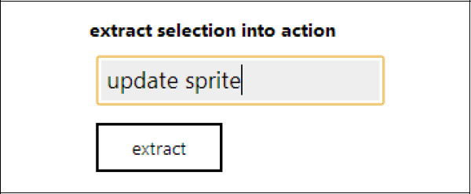
Figure A-11
Naming the extracted code
A.4.2 Copying and pasting code
If a range of lines of code has been marked, following steps similar to those given above, those lines can be cut and temporarily held on the editor’s clipboard.
Next another place in the code of any action or event can be selected. A button labeled paste appears on the right hand side. Tap that button to insert the cut code next to the selected line.
The pasted code appears above or below the selected line and which of the two places is chosen depends on various factors. To force the correct placement, always begin by inserting an empty line at the desired place for the pasted code. Then the paste button causes the pasted code to replace that empty line.
A.4.3 Surrounding code in a higher-level construct
Sometimes some complicated editing actions are needed. For example, an existing group of statements might need to become the then clause of a new if statement. That group of lines simply needs be marked using the same steps as previously described.
In the second column of the editor’s window, there is a heading which reads “surround with” and underneath there are buttons labeled if, for each, for, while and boxed. Each one of these buttons performs exactly as advertised.